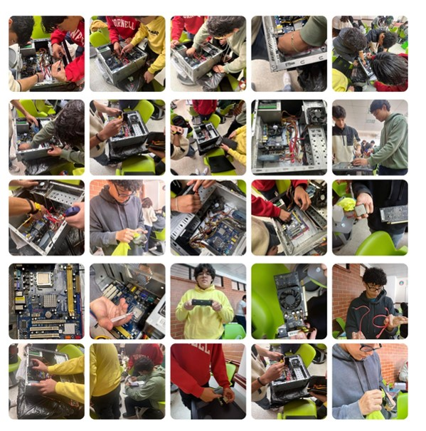
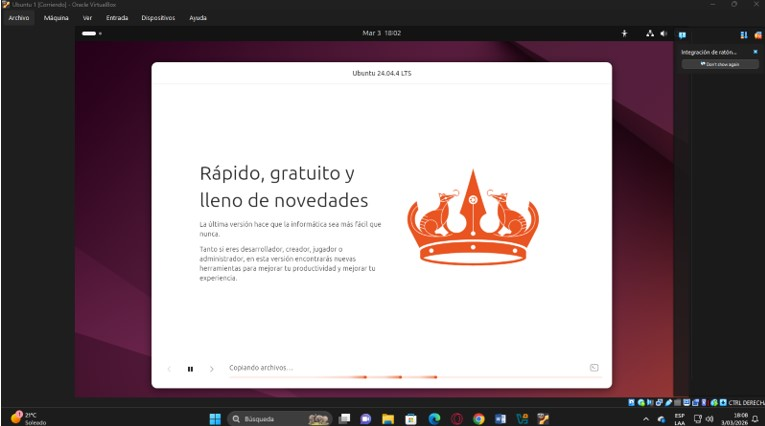
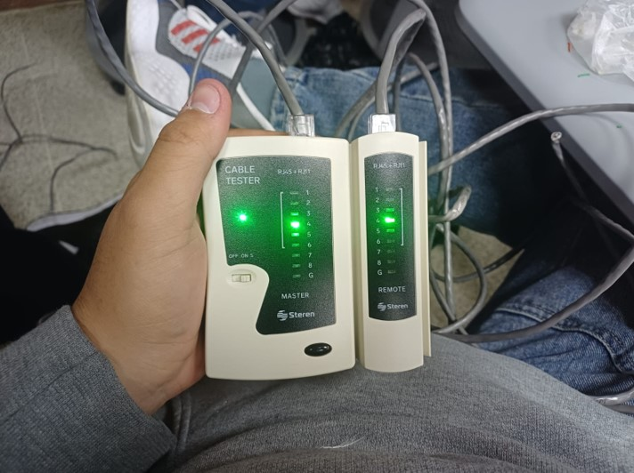

Proyecto general: Desarrollo de Portafolio Web Personal
El curso de Introducción a los Sistemas de Cómputo fue una de las bases principales durante el primer semestre de Ingeniería en Sistemas. A través de esta asignatura se trabajaron diferentes proyectos relacionados con el uso de computadoras, mantenimiento de equipos, sistemas operativos, redes, herramientas tecnológicas, documentación técnica y desarrollo web básico.
Esta materia permitió comprender que el área de sistemas no se limita únicamente a programar, sino que también incluye el conocimiento del hardware, el funcionamiento de los sistemas operativos, la conexión entre dispositivos, la organización de información, el uso de herramientas digitales y la creación de soluciones tecnológicas aplicadas a distintos contextos.
Durante el curso se realizaron varios proyectos prácticos que ayudaron a desarrollar habilidades técnicas importantes. Cada actividad permitió aplicar conocimientos de forma directa, documentar procesos mediante capturas de pantalla, elaborar informes y explicar los resultados obtenidos.
El proyecto principal de esta asignatura consistió en desarrollar un portafolio web personal relacionado con las competencias adquiridas durante el primer semestre de la carrera. Este sitio web tiene como propósito mostrar de manera organizada los proyectos realizados en diferentes cursos, incluyendo sus descripciones, objetivos, aprendizajes, imágenes y videos explicativos.
El portafolio fue desarrollado utilizando HTML, CSS, Visual Studio Code, GitHub y GitHub Pages. También se utilizó normalize.css para mejorar la compatibilidad visual del sitio en diferentes navegadores. Durante el proceso se aprendió a crear archivos, organizar carpetas, enlazar hojas de estilo, trabajar con imágenes, insertar videos y publicar una página web en internet.
Este proyecto también permitió comprender la importancia de la planificación antes de desarrollar un sitio web. Fue necesario decidir la estructura de las páginas, los colores, el menú de navegación, la forma de presentar los proyectos y la manera en que se organizaría la información para que el sitio fuera claro, funcional y visualmente atractivo.
El objetivo principal del portafolio web es mostrar de forma ordenada las competencias, aprendizajes y proyectos realizados durante el semestre, aplicando conocimientos básicos de desarrollo web y herramientas tecnológicas.
Además, el proyecto busca evidenciar el proceso de aprendizaje desde una etapa inicial, mostrando cómo se fue construyendo el sitio, cómo se conectó con GitHub, cómo se aplicó CSS y cómo se publicó mediante GitHub Pages.
Este proyecto permitió fortalecer conocimientos relacionados con HTML, CSS, GitHub, Visual Studio Code y publicación web. También ayudó a mejorar la organización del contenido, la presentación visual de información y la documentación de avances mediante capturas de pantalla.
A nivel personal, el desarrollo del portafolio representó un reto importante, porque fue una de las primeras experiencias creando una página web real. Durante el proceso surgieron dudas y errores, especialmente al conectar VS Code con GitHub, subir cambios, organizar archivos y modificar el diseño. Sin embargo, cada dificultad permitió aprender algo nuevo y mejorar el resultado final.
También se fortaleció la capacidad para explicar proyectos tecnológicos de manera sencilla. El portafolio no solo muestra resultados, sino también el proceso, las herramientas utilizadas y los conocimientos adquiridos durante el semestre.
Las siguientes imágenes representan evidencias del desarrollo del portafolio web, mostrando partes importantes del sitio, su diseño, estructura y avances realizados.



El video general del portafolio será agregado al finalizar completamente el sitio. En ese video se explicará el proceso de creación, las capturas tomadas durante el desarrollo, la navegación entre páginas, las tecnologías utilizadas, el código HTML, las reglas CSS y la publicación mediante GitHub Pages.
Esta parte queda pendiente porque el video debe grabarse al final, cuando el sitio ya esté en su versión casi definitiva.
Además del portafolio web, durante el curso se realizaron otros proyectos prácticos relacionados con computadoras, sistemas operativos y redes. Estos proyectos permitieron conocer mejor distintas áreas fundamentales de la carrera y aplicar conocimientos técnicos de forma directa.
En este proyecto grupal se realizó un mantenimiento preventivo a una computadora. El proceso consistió en desarmar el equipo para limpiar sus componentes internos, identificar partes importantes del hardware y documentar cada paso realizado.
También se investigaron elementos de la motherboard y componentes del CPU, comprendiendo mejor la función de cada parte dentro del equipo. Este proyecto ayudó a reconocer la importancia del mantenimiento preventivo para alargar la vida útil de una computadora y evitar fallos provocados por polvo, mala ventilación o falta de limpieza.
El aprendizaje principal fue comprender que el área de sistemas también requiere conocimientos físicos del equipo, no solamente uso de software. Saber identificar componentes internos permite tener una visión más completa del funcionamiento de una computadora.
En este proyecto individual se realizó la instalación del sistema operativo Ubuntu utilizando una máquina virtual en VirtualBox. Durante el proceso se configuraron recursos como memoria RAM, almacenamiento y ajustes básicos de rendimiento para permitir que el sistema funcionara correctamente.
Además de la instalación, se trabajó con comandos básicos de Linux desde la terminal. Esto permitió conocer una forma diferente de interactuar con el sistema operativo, utilizando instrucciones escritas en lugar de depender únicamente de una interfaz gráfica.
Este proyecto fue importante porque permitió tener un primer acercamiento al mundo de Linux, el cual es muy utilizado en servidores, programación, redes y administración de sistemas. También ayudó a comprender el uso de máquinas virtuales como herramienta para practicar sin afectar el sistema operativo principal.
En este laboratorio se realizó la fabricación de un cable Patch Cord directo y un cable cruzado utilizando cable UTP, conectores RJ45 y herramientas como ponchadora, pelacables y tester de red.
Durante el proceso se aplicaron las normas T568A y T568B para ordenar correctamente los cables dentro del conector. También se realizaron pruebas de funcionamiento para comprobar que los cables estuvieran bien elaborados y pudieran transmitir datos correctamente.
Este proyecto permitió comprender que las redes no dependen solamente de configuraciones digitales, sino también de una correcta instalación física. Un error en el orden de los cables o una mala conexión puede impedir la comunicación entre dispositivos.
En este proyecto se realizó la configuración de una red LAN conectando tres computadoras a un switch mediante cables directos. El objetivo fue permitir la comunicación entre los equipos mediante una red local.
Para lograrlo, se asignaron direcciones IP estáticas de clase C a cada computadora y se realizaron pruebas de conectividad utilizando comandos como ping. Estas pruebas permitieron verificar si los equipos podían comunicarse correctamente dentro de la red.
También se trabajó con el uso compartido de archivos y recursos en red, permitiendo que las computadoras detectaran otros equipos y compartieran carpetas. Este proyecto ayudó a comprender cómo funcionan las redes locales en un entorno práctico.
En este proyecto individual se diseñó e implementó una red LAN doméstica dentro de una casa de tres niveles. La red integraba diferentes dispositivos conectados por cable y de forma inalámbrica.
El proyecto incluyó la configuración de routers, switches y repetidores, además de la asignación de direcciones IP, seguridad con contraseñas y pruebas de comunicación entre dispositivos. También se representó gráficamente la distribución de la red dentro de la vivienda.
Este proyecto permitió comprender mejor cómo se planifica una red en un espacio real, considerando cobertura, cantidad de dispositivos, conexión entre niveles y seguridad básica. Fue una práctica importante para relacionar la teoría de redes con una situación más cercana a la vida cotidiana.
Introducción a los Sistemas de Cómputo fue una asignatura fundamental para empezar a conocer diferentes áreas de la carrera. A través de los proyectos realizados se trabajaron temas como hardware, sistemas operativos, redes, desarrollo web, documentación técnica y publicación de proyectos.
El curso permitió desarrollar una visión más amplia sobre lo que implica estudiar Ingeniería en Sistemas. Cada proyecto aportó una habilidad diferente y ayudó a construir una base inicial para continuar aprendiendo en los siguientes semestres.